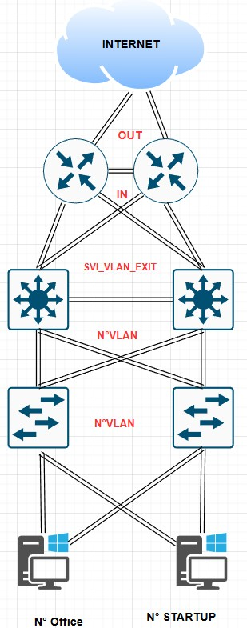
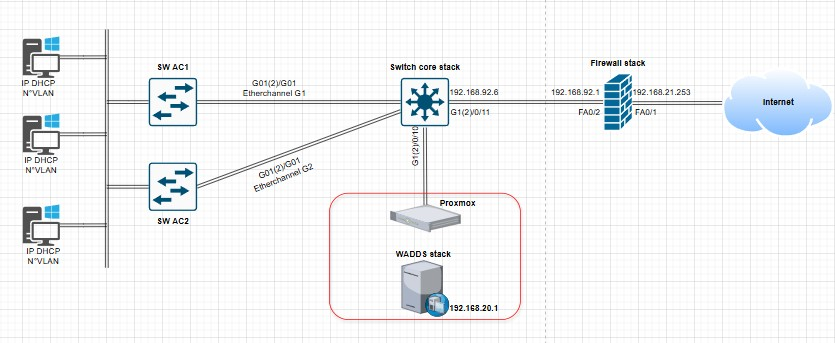

Projet Station F
Présentation : C'est quoi Station F
Station F c'est le plus grand campus de startups au monde, il est situé dans la halle Freyssinet, un ancien bâtiment ferroviaire construit dans les années 1920 (Gare d’Austerlitz à Paris). La Station F propose une variété de services aux startups, notamment des bureaux, des salles de réunion, des espaces de coworking, des laboratoires, des espaces de restauration et des espaces d'événements. C'est un lieu d'innovation et d'entrepreneuriat qui accueille des startups de tous secteurs, de la technologie à la santé en passant par la finance et le commerce.
But du projet
L'objectif principal de ce projet est de reproduire l'infrastructure réseau de Station F. Il s'agit d'un exercice dans lequel nous simulons le rôle d'une société prestataire, chargée d'installer, maintenir et optimiser cette infrastructure afin de garantir un service fiable et performant aux startups du campus. L'enjeu majeur est de maintenir une infrastructure informatique robuste, évolutive et sécurisée, capable de répondre aux besoins spécifiques des entreprises hébergées, tout en assurant la continuité des services sans interruptions majeures.
Contexte
Ce projet fait partie de ma formation en BTS, dont l'objectif est d'appliquer les compétences acquises dans un cadre professionnel concret. Dans le cadre de ce projet, On simule le rôle d'une société prestataire. En tant que technicien informatique réseau et système chez Synergis, mon équipe et moi sommes responsables du maintien du réseau informatique de Station F. Nous gérons les infrastructures dédiées aux startups, assurons la surveillance continue du réseau, la résolution des problèmes et la mise à jour du matériel et des logiciels du réseau.
Télécharger le fichier du contexte de Station F
Télécharger le fichier des adresses IP
Schèma Réseau physique et logique
Schèma physique
Schèma logique
Mes tâches pendant le projet
- Création des comptes informatiques sur l'active directory
- Mise en place d'un site web sur un srvweb pour les startups
- Mise en place d'un deuxième stormshield
- Création d'une nouvelle startup : création d'un vlan pour la nouvelle startup, configuration d'une SVI sur le sw core plus mise en place du DHCP pour le vlan de la startup
- Mise en place de HomeFolders, Profiles, d'une OU et mappage de lecteurs via GPO pour l'OU sur le serveur de fichiers